Outside of school and engineering
I'm Laird — a mechanical and mechatronics engineering student at UBC. Before any of that I was a kid on a rink, on a court, and on film sets. All of it is still the reason I like building things.
Thirteen years of showing up
Competitive volleyball and hockey my whole life — silver at Volleyball Nationals in 2023, and BC School Sports Athlete of the Month for volleyball in October 2024.
What actually transferred to engineering wasn't the medals. It was the reps: show up, get it wrong in front of people, adjust, go again.
- BC School Sports Athlete of the Month — volleyball, October 2024
- Silver at Volleyball Nationals 2023
- Captain of ice hockey, ball hockey, ultimate and volleyball
- PCAHA Scholarship Award recipient
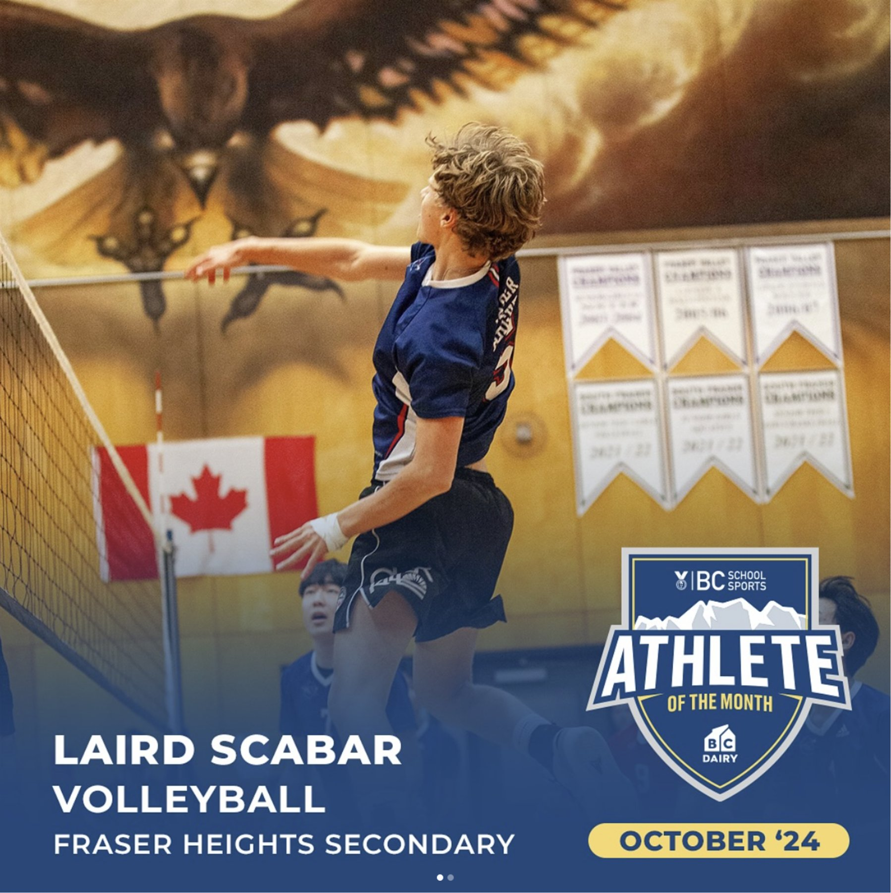
BC Athlete of the Month — Oct '24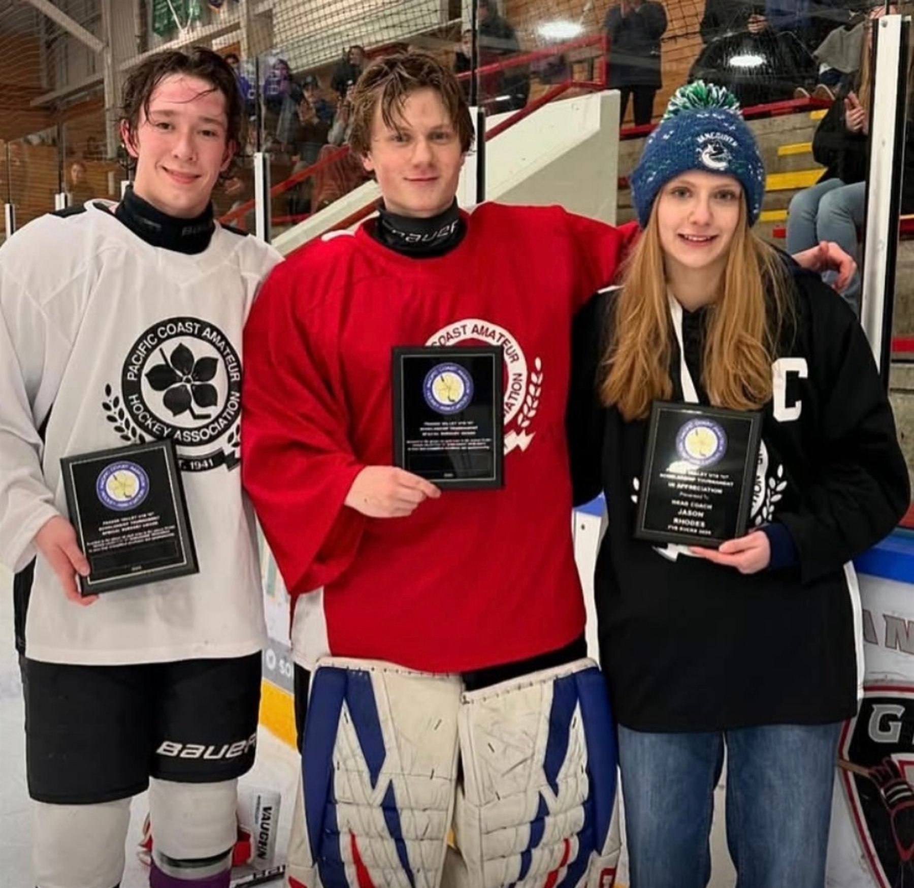
PCAHA Scholarship AwardEvery year since 2020
I've helped organize my community's Terry Fox Run since 2020 — recruiting volunteers out of my high school, securing local sponsors, and planning the route with the city. I also ran merch and food fundraisers year round, not just on race day.
That work has contributed to over $50,000 raised for cancer research. It's the thing I'm proudest of that has nothing to do with engineering.
- Organizing volunteers and fundraisers since 2020
- Merch and food fundraisers run year round
- Sponsors, route planning, and race-day operations
- Over $50,000 contributed to cancer research
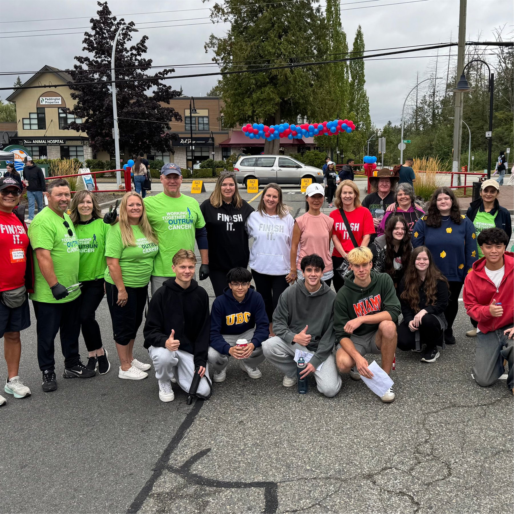
Race day, the whole crew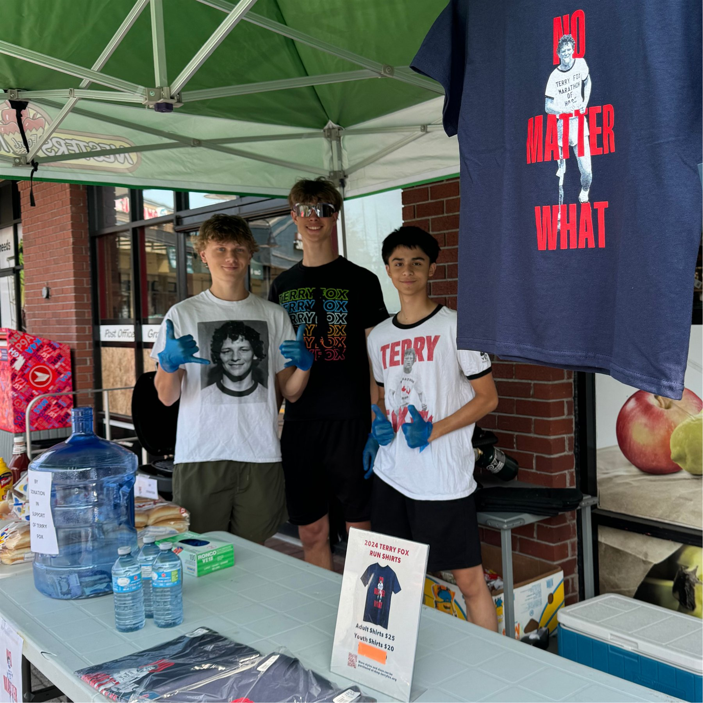
Merch and food fundraiserTen years on set
I acted professionally from the age of eight, working on live-action and animated productions with companies like Netflix, Disney, CBC and Amazon Prime.
Film sets are a good crash course in professionalism: hit your mark, take direction without ego, and be easy to work with when everyone is tired.
See the IMDb page →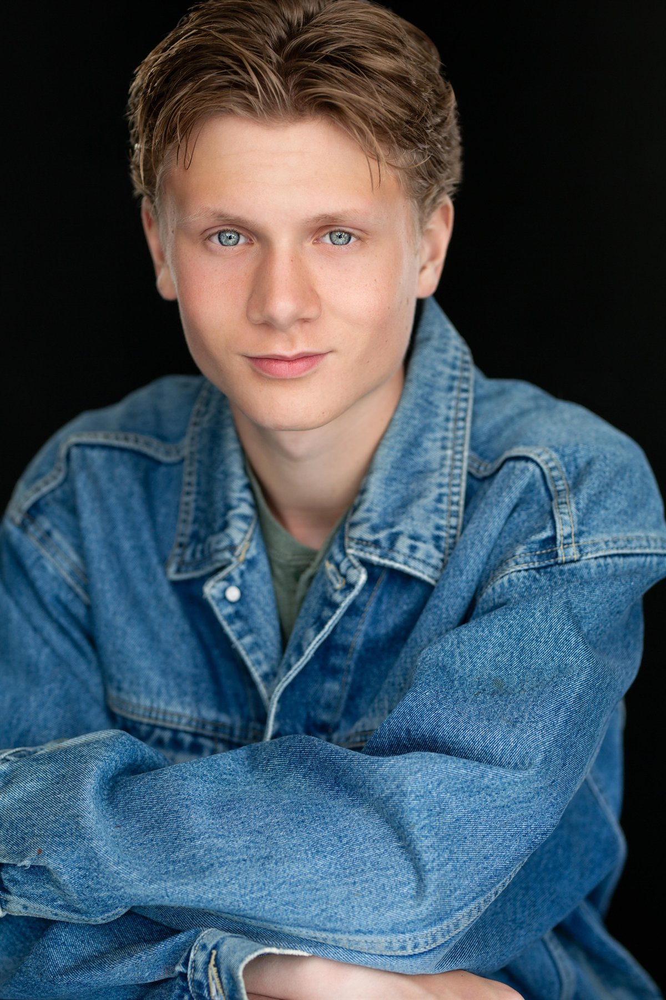
Headshot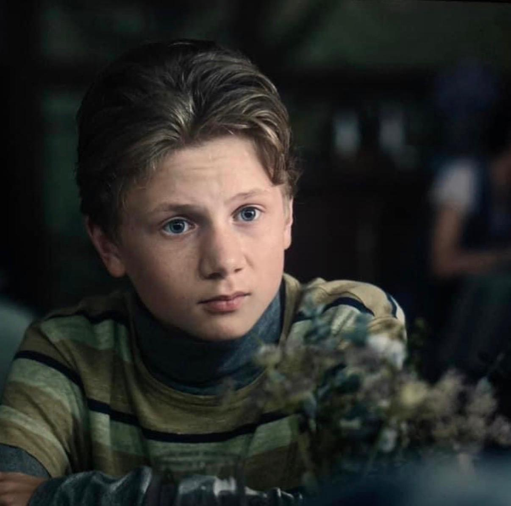
On screen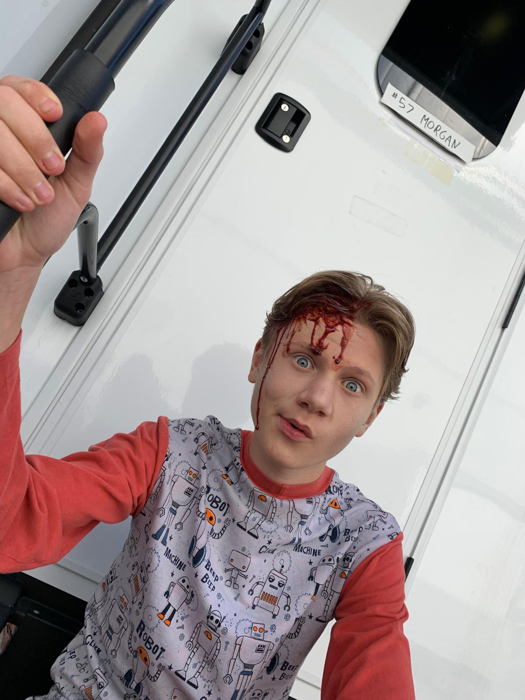
In the makeup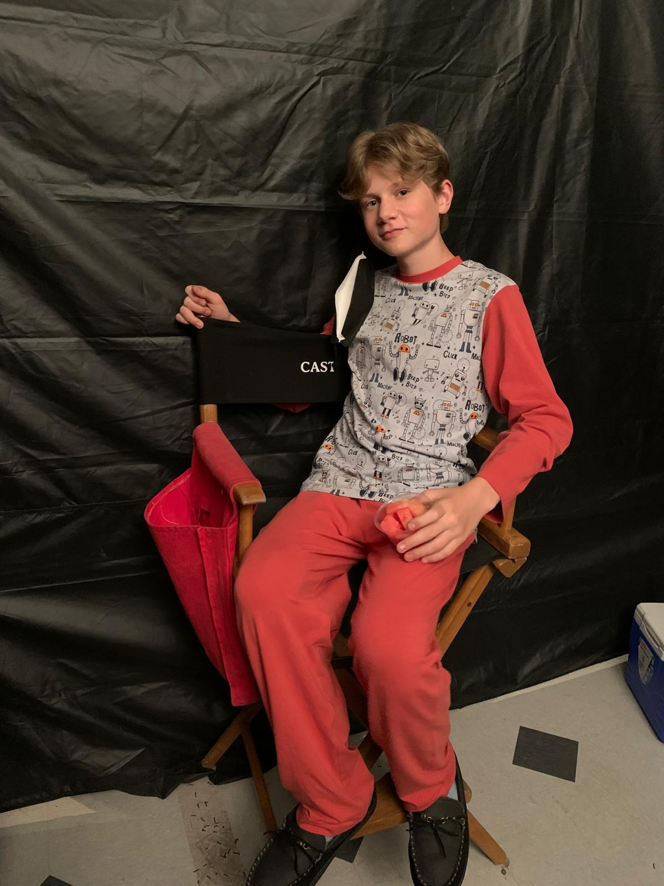
Between takesSnowboarding, surfing, hiking
I snowboard all winter, surf and paddle board on the coast, and hike the North Shore and Sea-to-Sky most of the year. Best trip so far was the Dolomites in Italy.
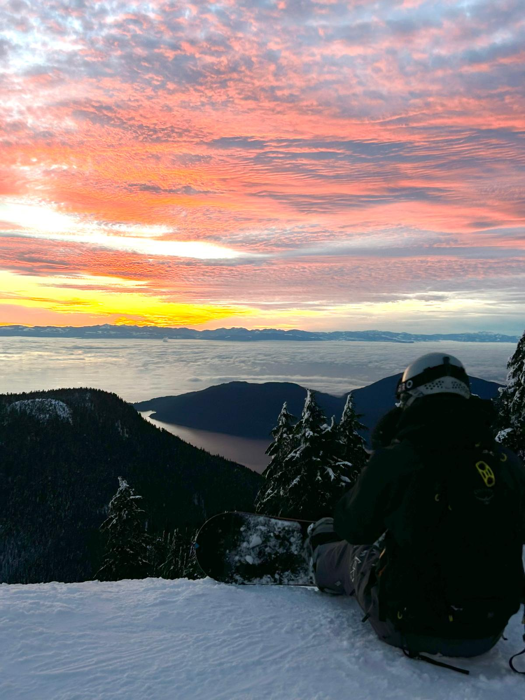
Sunset lap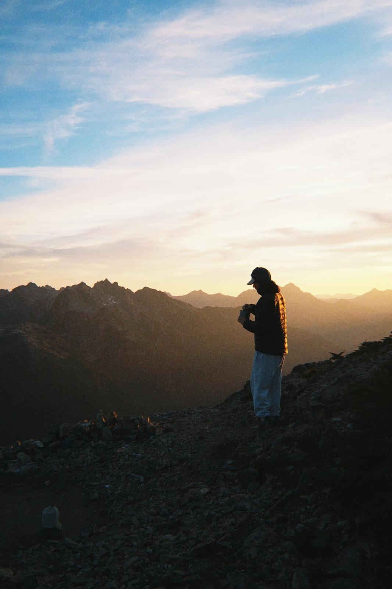
North Shore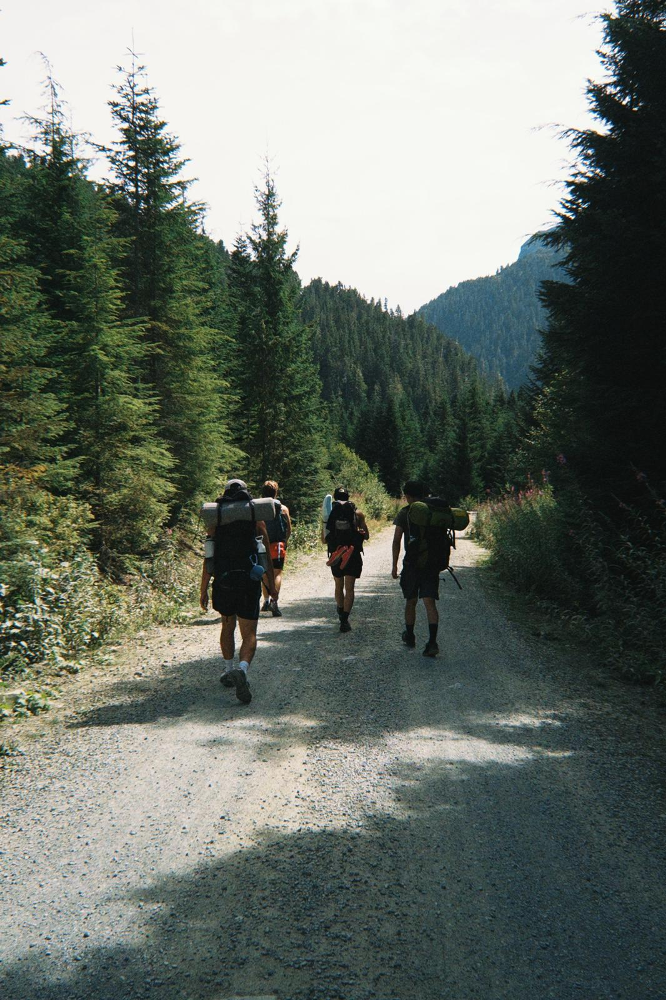
Sea-to-Sky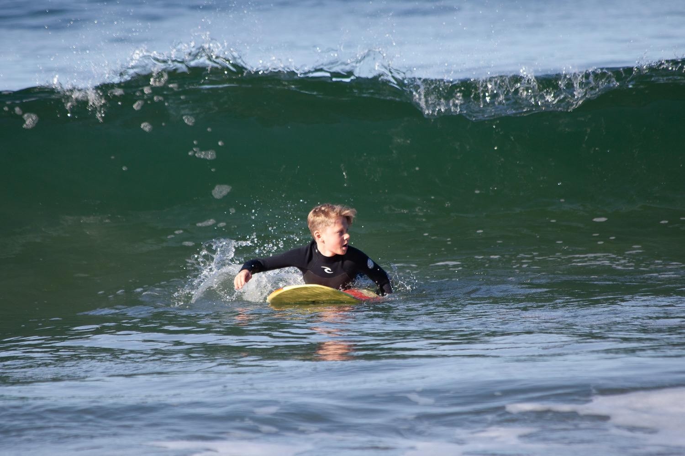
Surfing the coast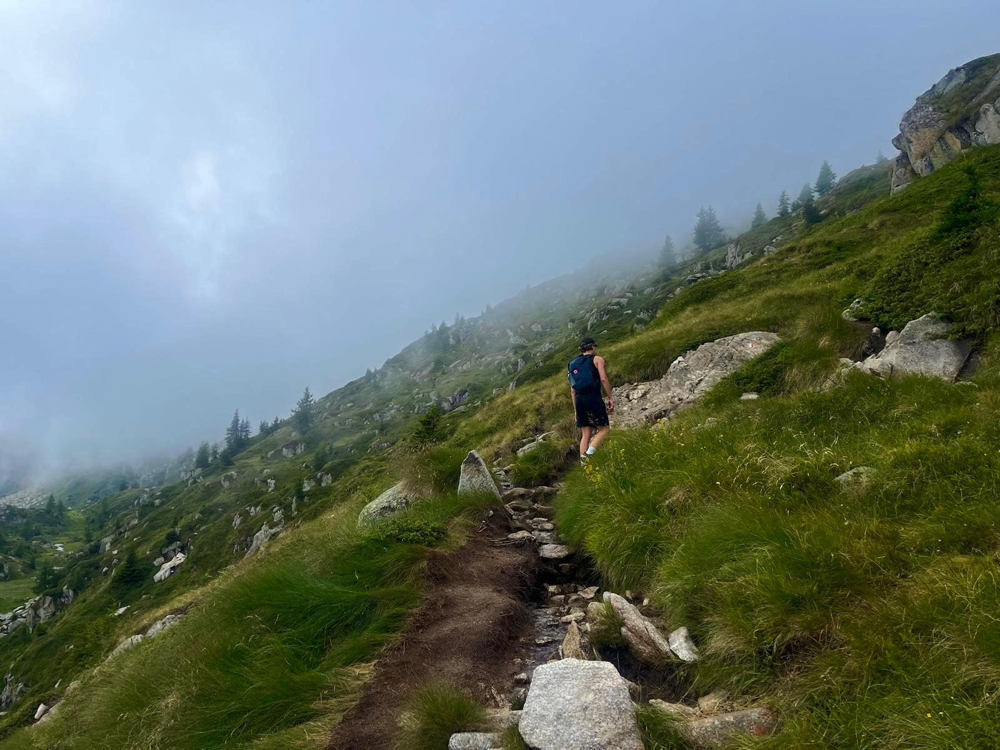
The Dolomites, ItalyThat's the whole story
If any of it resonated — or you just want to talk about engineering, sports, or something you're building — I'd love to hear from you.